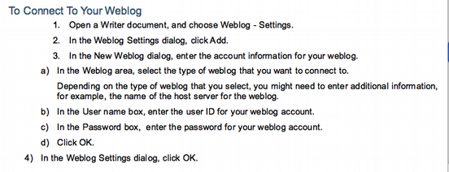
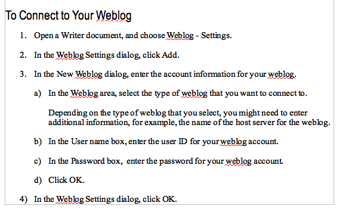

I told you the lists in OpenOffice.org Writer were wacky!
2006-10-20
I have been going on about the way OpenOffice.org Writer deals with lists here for a while. It's complicated and confusing, but if you use styles in a sensible way, then you can get pretty good results. In this post I will show how some less-than perfect formatting can be fixed up using the styles from ICE.
I have recently been trying to use the new Sun Weblog Publisher tool for OpenOffice.org with little success.
Along the way I had to use the help. Turns out that 'help' in this case is some kind of document . It doesn't contain anywhere near enough detail on how to use the product . It costs money, but comes with no support.
Look at the formatting (looks the same on the Mac using NeoOffice and on Windows XP using OpenOffice.org):

Note how the numbering and indenting is all over the place. The outer list (1, 2, 3, 4) is indented more than the inner list (a, b, c, d). Except when it isn't.
To see what would happen I copied from the help to this here document where strangely it formats fairly nicely. Here's a screen shot:

It has a couple of strange features. One is that the inner (a.. d) list uses a style while the outer list doesn't. I recommend styles – particularly for technical writing, and particularly if you happen to be selling word processing software.
If I get the weblog editor to work I want to paste-in this bit of documentation from the product itself and see how it goes being transformed into HTML.
Now, here's how you'd format that help text in using ICE styles. I have added some text to show what style is used.
{h2} To Connect to Your Weblog
-
{li1n} Open a Writer document, and choose Weblog - Settings.
-
{li1n} In the Weblog Settings dialog, click Add.
-
{li1n} In the New Weblog dialog, enter the account information for your weblog.
-
{li2a} In the Weblog area, select the type of weblog that you want to connect to.
{li2p} Depending on the type of weblog that you select, you might need to enter additional information, for example, the name of the host server for the weblog.
-
{li2a} In the User name box, enter the user ID for your weblog account.
-
{li2a} In the Password box, enter the password for your weblog account.
-
{li2a} Click OK.
-
-
{li1n} In the Weblog Settings dialog, click OK.
Note that if you use the ICE Styles menu it applies both a list style
and a paragraph style to each list item. You don't have to know the
style name – the style menu in ICE is hierarchical so you can choose
Styles / List Item / Level 1 / Numbered, or navigate through
that menu using Alt-key combinations (on platforms that support it). Or
set up direct key combinations for your most-used styles.
ICE converts documents using ICE styles to good HTML, which you can see in this post. The styles tell it exactly how to structure the HTML.
It tried converting Sun's instructions as-is to HTML using both the Save as HTML option and the Export as XHTML option in NeoOffice and in both cases the formatting was wrong; this is because mapping arbitrary word processing formatting to HTML is an impossible task.
ICE is free software – and the template is available from the site. If any software vendor would like to use it to format their product documentation that would be great. Feel free to contact me for assistance.